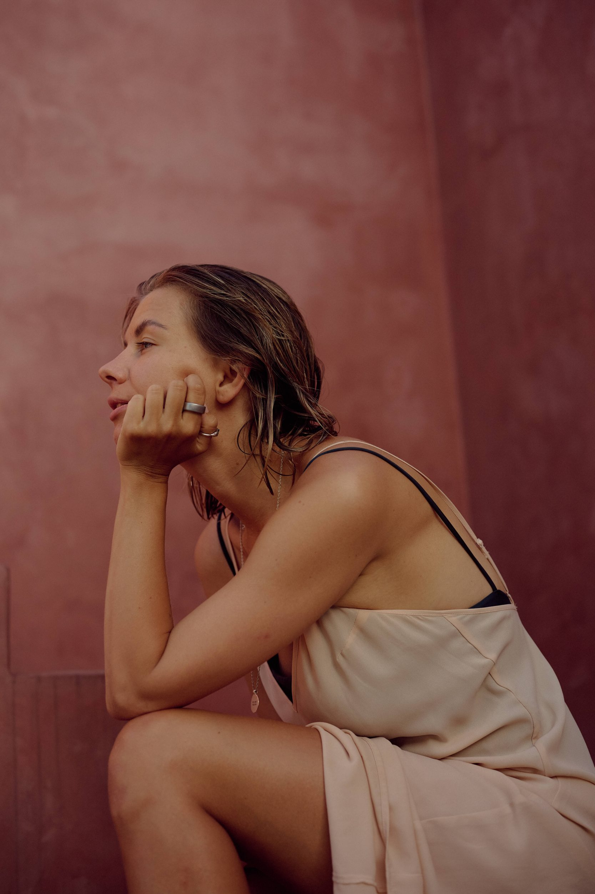

моя миссия создавать безопасные пространства и проекты, в которых люди встречаются с собой и им становится лучше

15 лет я строила проекты в wellbeing и спорте в госструктурах, стартапах и корпорациях, от Москомспорта и Sektaschool до бренд-команды Nike. в 2022 я сменила страну и посвятила себя ремеслу и созданию собственного бренда soft power, который строится вокруг йоги, отношений с телом и осознанности
всё, что я делала в жизни Sektaschool, Nike, soft power, ретриты, ивенты и события было про одно: я придумываю красивый целостный опыт целиком и провожу через него человека. концепция, смыслы, команда, пространство, визуал, музыка, путь человека внутри
я называю это архитектурой опыта
сейчас я живу в лиссабоне, много путешествую и открыта к международным проектам на стыке wellbeing, biohacking, longevity, телесных практик и человеческой трансформации. я адепт баланса между твёрдым и мягким и люблю красиво соединять материальное с духовным
придумываю, собираю и запускаю опыты под ключ: проекты, события, ретриты, корпоративный wellbeing. консалтинг и стратегические сессии от концепции до последней детали
если вы инвестор, бренд, предприниматель, который ищет партнёра для проекта, или у вас есть идея и нужен консалтинг, который поможет оформить и запустить её в жизнь. давайте поговорим!
поработать со мной →регулярная практика офлайн в лиссабоне и онлайн из любой точки мира · ретриты и уникальные события · подписка на канал с видео и аудиопрактиками: йога, медитация, дыхание · мерч soft power
подробности расписания и форматов по кнопке ниже
практиковать йогу →йога-тичер, архитектор опыта, предприниматель, продюсер, менеджер. 15 лет я строила проекты вокруг wellbeing и спорта, а потом ушла в ремесло и стала преподавать йогу под своим брендом. в какой-то момент я поняла, что не хочу разделять роли: я создаю опыт. иногда он выглядит как класс йоги иммерсивная практика с живой музыкой в старинном театре. иногда как корпоративная программа или ретрит. форма меняется, суть остаётся
мой девиз, моя философия и имя моего бренда. мягкая сила это когда ты меняешь людей не давлением, а пространством, в котором им безопасно меняться самим
это человек, который создаёт целостный опыт для продукта или события онлайн или офлайн так, чтобы этот опыт действительно изменил человека, который с ним столкнулся. концепция, смыслы, команда, пространство, визуал, музыка, продвижение и путь человека внутри всё это одна система
да. событие или ретрит под ключ, корпоративную wellbeing-программу, консалтинг или стратегическую сессию. а ещё можно позвать меня поговорить о твоём продукте. мы найдём точку взаимодействия, если у нас общие ценности
международные проекты на стыке wellbeing, longevity, биохакинга, ai, телесных практик и креатива. партнёрства с компаниями и брендами, для которых люди не строчка в бюджете. события и пространства мирового уровня. и людей, с которыми хочется строить новый мир
с компаниями, которым нужен не просто тимбилдинг с мастермайндами, а настоящий контакт. с людьми, которые твёрдо стоят на ногах и осознают ценность духовной практики. со студиями и фаундерами wellbeing-проектов. и с теми, кто приходит на коврик
никуда. йога моя ежедневная практика больше 15 лет. я обучалась у преподавателей по всему миру, участвовала в международных саммитах и tribe gatherings в париже и барселоне, продолжаю учиться постоянно и практикую ежедневно. йога лишь одна из моих граней
да, мне не важно, что проектировать)) даже отпуск для родителей я задизайнила как уникальный опыт от первого шага до последнего: маршрут, ритм, впечатления, сюрпризы посмотреть и вдохновиться. архитектура опыта это не работа, это способ смотреть на мир
базируюсь в лиссабоне, работаю по всему миру: онлайн, гибридно или прилечу если проект того стоит
проще всего telegram. расскажи, что у тебя за идея или задача. свяжемся и обсудим
об этом не принято говорить на интервью, но я верю: когда мы заходим в общий проект или опыт, важно быть созвучными. так вот, в моём бэкграунде есть:
10 лет хореографической школы · работа на крупнейших мировых спортивных чемпионатах внутри Москомспорта · управление московским филиалом самого большого фитнес-стартапа · менеджмент и продюсирование в международной корпорации · сертифицированное тренерство · лекции перед аудиторией 300+ человек · серийная эмиграция · организация фестивалей, ивентов, ретритов всего на свете · высшее образование в маркетинге · лидерство и создание команд · 10 лет психотерапии · коучинг · создание продуктов · 15 лет практики йоги, пранаямы и breathwork · тантра и випассана · йога-тичерство и десятки обучений, которые я прохожу постоянно у лучших, расширяясь во все стороны
мне нравится создавать пространство, где человек через практику может встретиться с собой. мне интересно придумывать уникальный опыт и укутывать в него людей. думать, как сделать полезнее, лучше, красивее и интереснее
давай обсудим, что мы можем сделать вместе. расскажи, что у тебя за идея, задача или ощущение «нужен человек, который соберёт это целиком и придаст этому форму»
написать мне